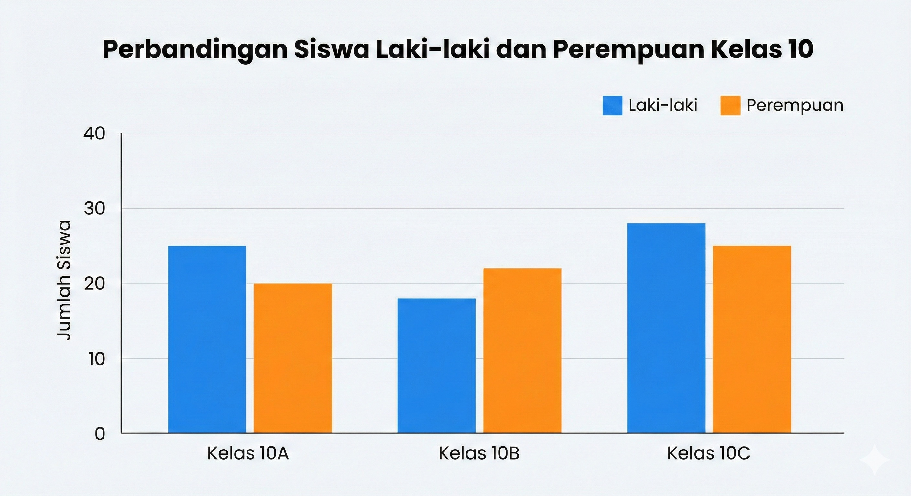

Halo, Penjelajah Data!
Pak Cokro siap menemanimu mengungkap informasi dari data. Pilih namamu untuk memulai.
1. Pengantar Visualisasi Data
Visualisasi data adalah seni bercerita menggunakan data. Kita memilih grafik agar pola yang rumit menjadi mudah dipahami.
2. Diagram Batang (Bar Chart)
Fungsi: Perbandingan. Cocok untuk membandingkan nilai antar kategori.
3. Grafik Lingkaran (Pie Chart)
Fungsi: Proporsi. Digunakan untuk menunjukkan bagian dari keseluruhan (100%).

4. Grafik Garis (Line Chart)
Fungsi: Tren. Digunakan untuk melihat perubahan data dalam kurun waktu tertentu.

Soal 1 dari 15
Teks soal di sini...
Skor Ketuntasan
0
Menghitung...